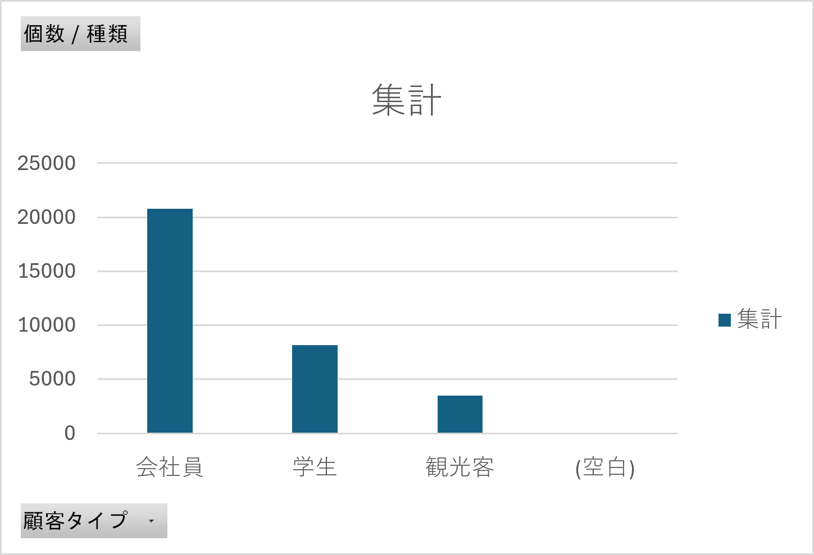
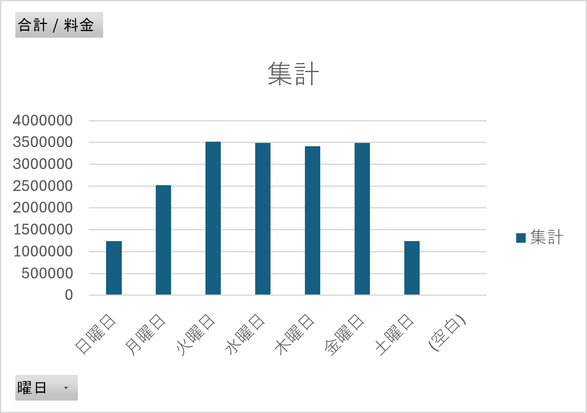
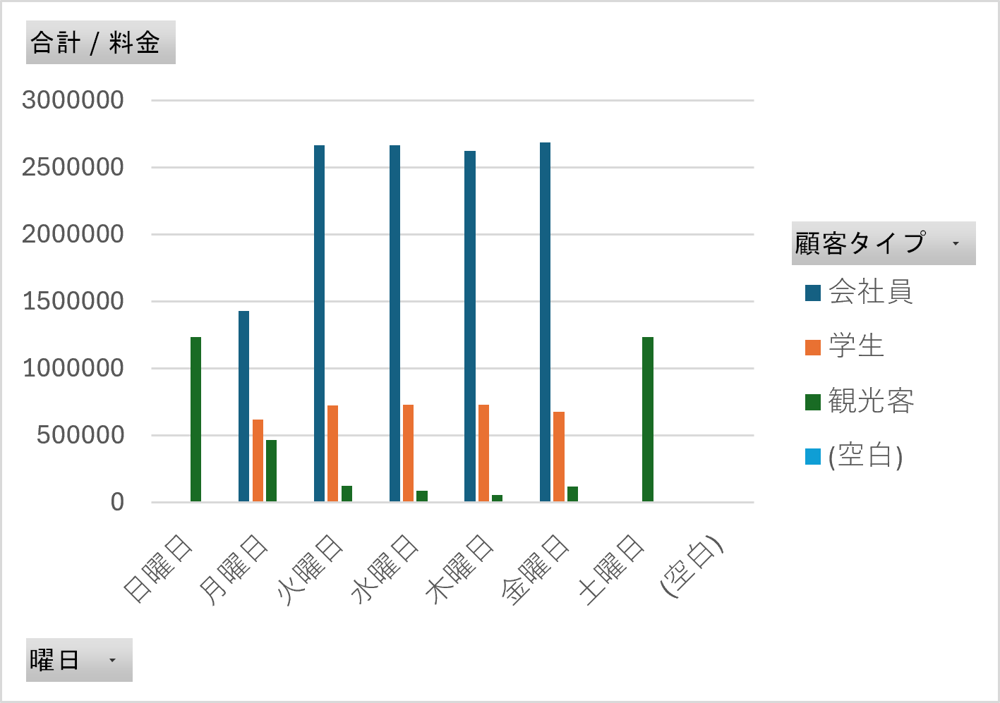

はじめに
まず初めに、さまざまなデータを扱うことが 初めてだったので、どのような特徴があるのか 調べることから始めました。 今回は、利用者の種類や曜日ごとの売上に注目し、 データを分析しました。
顧客タイプ別の利用者数

最初の図から、利用者の中では会社員が最も多く、 次に学生、観光客の順に多いことがわかる。 特に会社員の利用者数が多いことが特徴である。
会社員の利用者数が最も多く、全体の利用者を 大きく占めていることがわかった。
曜日別の売り上げ

2つ目の図から、曜日別の売り上げを見ると、 月曜日から金曜日までの平日の売り上げが高く、 土曜日と日曜日は売り上げが低いことがわかった。
平日と休日では売り上げに大きな違いが あることがわかった。
曜日別・顧客タイプ別の売り上げ

3つ目の図では、なぜ平日と休日で売り上げに 大きな差が生まれるのか気になり、 顧客タイプ別に分けて分析した。 その結果、平日は会社員と学生が多く、 土日は観光客の利用が多いことがわかった。
平日は会社員と学生、休日は観光客が中心となり、 曜日によって利用する顧客層が異なることがわかった。
今回の分析を通して
今回の分析を通して、利用者の種類や曜日によって 売り上げに違いが生まれることがわかった。 分析では全体を見てから、自分の気になる部分をさらに詳しく調べられることが面白いと感じた。 データで様々な視点から見ることで、新たな発見につながることが分かった。